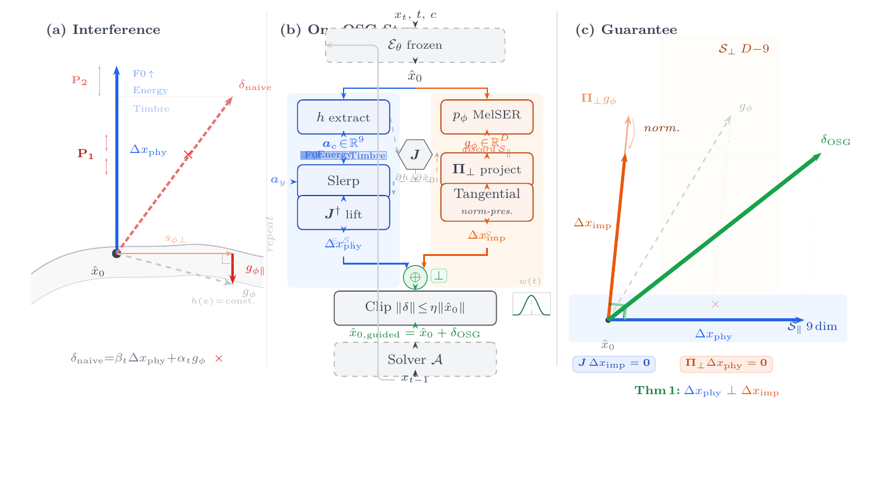
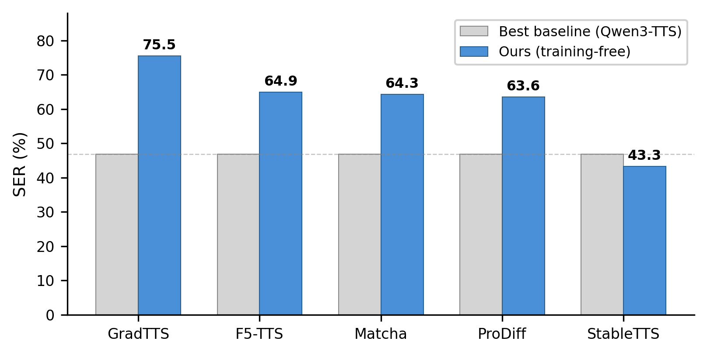
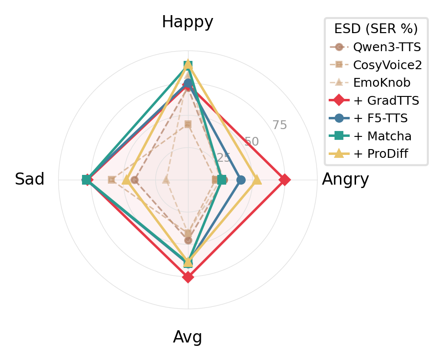
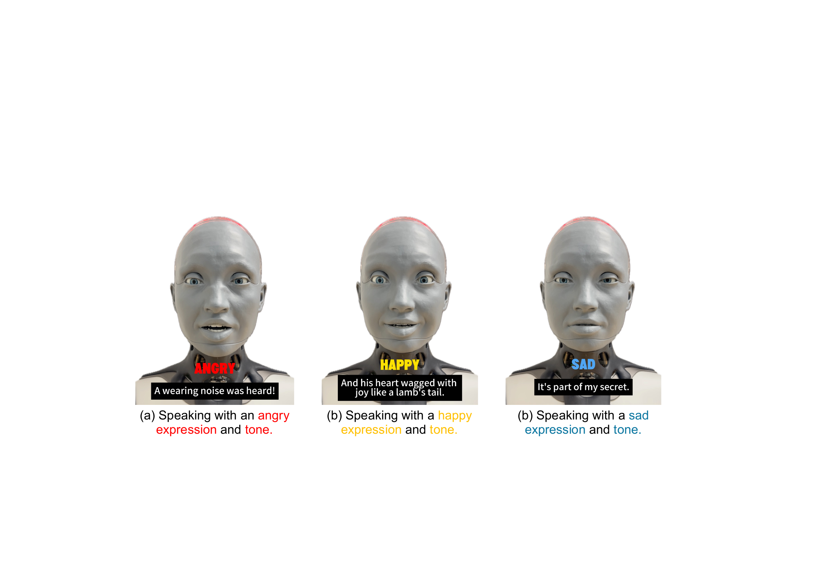

Emotionally expressive speech is critical to advancing humanoid robots toward human-like interaction. Modern TTS models produce highly natural speech but lack explicit emotion control. We discover that pretrained TTS models encode emotion as a linearly decodable signal in a low-dimensional subspace nearly orthogonal to speaker identity, even without any emotion training objective. Building on this finding, we propose DUET, a training-free dual-space method that steers emotion in any frozen iterative TTS model. DUET combines constrained discriminant probing for optimal latent steering directions with magnitude-aware intervention, and routes an emotion objective through a differentiable vocoder under a scheduled trust region for spectral emotion refinement. Evaluated on 5 backbones, 3 datasets, and 10 baselines, DUET achieves emotion control that exceeds the best trained baseline on 4 of 5 backbones. Deployment on an Ameca humanoid robot further demonstrates the potential of steered emotional speech for affective human-robot interaction.
DUET operates in two complementary spaces. In latent space, constrained discriminant probing extracts emotion-specific steering directions from a frozen model's hidden states. In acoustic space, a differentiable vocoder routes an SER objective into mel-spectrogram modifications under a scheduled trust region. Both signals are applied at inference time with no parameter updates.

Figure 1. DUET overview — (a) Latent steering via constrained discriminant probing, (b) Dual-space guidance pipeline, (c) Trust-region guarantee.
DUET is evaluated on 5 architecturally diverse TTS backbones (DiT, Transformer, U-Net, progressive distillation, and lightweight diffusion) across 3 emotion speech datasets. Without any training, DUET exceeds the best trained baseline on 4 of 5 backbones.

Figure 2. Emotion accuracy (SER %) across 5 backbones. Blue: DUET (training-free). Gray: best trained baseline (Qwen3-TTS).

Figure 3. Per-emotion SER on ESD. DUET (red) vs. trained baselines across angry, happy, sad.
DUET is deployed on an Ameca humanoid robot (Engineered Arts) to demonstrate training-free emotion control on a physical embodied agent. Speech is generated using our method and played through the robot with phoneme-to-viseme lip synchronization and emotion-matched facial expressions (60+ facial actuators). Angry utterances pair raised vocal intensity with a furrowed brow; happy utterances pair bright tone with a smile; sad utterances pair subdued prosody with a downcast gaze.

Figure 4. Ameca speaking with DUET-steered emotional speech. Facial expressions are synchronized with the audio emotion.
@inproceedings{anonymous2026duet,
title = {Representation Steering for Emotion Control
in Speech Synthesis},
author = {Anonymous},
booktitle = {Advances in Neural Information Processing
Systems (NeurIPS)},
year = {2026}
}